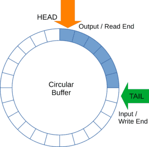

RING BUFFER

- 2025 · 01 RING BUFFER
Ring buffer, circular buffer olarak da bilinir, uçtan uca bağlanmış gibi tek, sabit boyutlu bir buffer alan kullanan bir veri yapısıdır. İlk giren ilk çıkar (FIFO) mantığıyla çalışan bu yapılar özellikle verilerin sürekli olarak üretildiği ve tüketildiği durumlarda; örneğin veri akışı uygulamalarında, üretici ve tüketicinin aynı anda kullanıldığı queue gibi senaryolarda faydalıdır.
- Sabit Boyut: Dairesel tampon, önceden belirlenmiş bir boyuta sahiptir. Bu, tamponun belirli bir sayıda öğe tutabileceği anlamına gelir. Tampon dolduğunda, yeni veriler geldiğinde en eski veriler üzerine yazılır.
- Döngüsel Yapı: Tamponun sonuna ulaşıldığında, bir sonraki öğe tamponun başına yazılır. Bu, alanın verimli bir şekilde kullanılmasını sağlar.
- İki Göstergesi: Genellikle, dairesel tampon iki gösterge tutar: Baş Göstergesi (Head Pointer): Bir sonraki okunacak öğenin konumunu gösterir. Kuyruk Göstergesi (Tail Pointer): Bir sonraki yazılacak öğenin konumunu gösterir.
- Verimli İşlemler: Hem ekleme (enqueue) hem de çıkarma (dequeue) işlemleri sabit zaman diliminde, yani zaman karmaşıklığı ile gerçekleştirilebilir. Bu, gerçek zamanlı uygulamalar için verimlidir.
Veri Ekleme (Enqueue): Yeni bir veri eklemek için, kuyruk göstergesi kullanılır. Veriyi bu göstergeye yazdıktan sonra, kuyruk göstergesi bir sonraki konuma (genellikle tail = (tail + 1) % max_size) güncellenir. Eğer tampon dolu ise (yani tail ve head aynı konumda ve dolu bayrağı set edilmişse), baş göstergesi bir sonraki konuma güncellenir (head = (head + 1) % max_size), böylece en eski veri üzerine yazılır.
Veri Çıkarma (Dequeue): Veriyi çıkarmak için, baş göstergesi kullanılır. Bu göstergeye göre veri okunur. Okuma işlemi yapıldıktan sonra, baş göstergesi bir sonraki konuma güncellenir (head = (head + 1) % max_size). Eğer tampon boşsa (yani head ve tail aynı konumda ve dolu bayrağı set edilmemişse), veri çıkarma işlemi gerçekleştirilemez.
Döngüsel Yapı: Dairesel tamponun en önemli özelliği, dizinin sonuna ulaşıldığında, bir sonraki konumun dizinin başına dönecek şekilde ayarlanmasıdır. Bu, mod işlemi ile sağlanır (index = (index + 1) % max_size).
Circular Buffer in C
#include
#include
#include
typedef struct {
int *buffer; // Pointer to the buffer array
size_t head; // Index of the head (read position)
size_t tail; // Index of the tail (write position)
size_t max; // Maximum size of the buffer
bool full; // Flag to indicate if the buffer is full
} CircularBuffer;
// Function to initialize the circular buffer
void cb_init(CircularBuffer *cb, size_t size) {
cb->buffer = (int *)malloc(size * sizeof(int));
cb->max = size;
cb->head = 0;
cb->tail = 0;
cb->full = false;
}
// Function to free the circular buffer
void cb_free(CircularBuffer *cb) {
free(cb->buffer);
}
// Function to add an element to the buffer
void cb_enqueue(CircularBuffer *cb, int item) {
cb->buffer[cb->tail] = item;
if (cb->full) {
cb->head = (cb->head + 1) % cb->max; // Move head if full
}
cb->tail = (cb->tail + 1) % cb->max;
cb->full = cb->tail == cb->head;
}
// Function to remove an element from the buffer
int cb_dequeue(CircularBuffer *cb) {
if (cb->head == cb->tail && !cb->full) {
printf("Buffer is empty!\n");
return -1; // Buffer is empty
}
int item = cb->buffer[cb->head];
cb->full = false; // Mark as not full
cb->head = (cb->head + 1) % cb->max;
return item;
}
// Function to check if the buffer is empty
bool cb_is_empty(CircularBuffer *cb) {
return (cb->head == cb->tail && !cb->full);
}
// Function to check if the buffer is full
bool cb_is_full(CircularBuffer *cb) {
return cb->full;
}
// Function to print the contents of the buffer
void cb_print(CircularBuffer *cb) {
size_t index = cb->head;
while (index != cb->tail || cb->full) {
printf("%d ", cb->buffer[index]);
index = (index + 1) % cb->max;
}
printf("\n");
}
// Example usage
int main() {
CircularBuffer cb;
cb_init(&cb, 5); // Create a circular buffer of size 5
cb_enqueue(&cb, 1);
cb_enqueue(&cb, 2);
cb_enqueue(&cb, 3);
cb_print(&cb); // Output: 1 2 3
printf("Dequeued: %d\n", cb_dequeue(&cb)); // Output: 1
cb_print(&cb); // Output: 2 3
cb_enqueue(&cb, 4);
cb_enqueue(&cb, 5);
cb_enqueue(&cb, 6); // This will overwrite the oldest data (2)
cb_print(&cb); // Output: 3 4 5 6
cb_free(&cb); // Free the allocated memory
return 0;
}